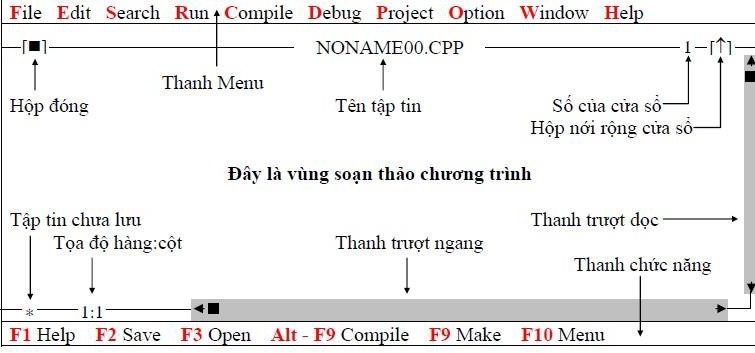

Tiền thân của ngôn ngữ lập trình C là ngôn ngữ BCPL ( Basic Conbined Programming Language) do Martin Richards nghiên cứu. Ảnh hưởng của ngôn ngữ BCPL lên ngôn ngữ lập trình C gián tiếp thông qua ngôn ngữ B, do Ken Thompson viết năm 1970 cho hệ điều hành UNIX chạy trên họ máy tính PDP – 7.
Nhu cầu cải tiến và phát triển cho UNIX đã thúc đẩy Dennis Ritchie và Brian Kernighan sáng tạo ra ngôn ngữ lập trình C ngay tại phòng thí nghiệm BELL ( Hoa Kỳ) vào đầu những năm 70 nhằm mục đích ban đầu là phát triển một ngôn ngữ hệ thống mềm dẻo thay thế cho ngôn ngữ Assembly vốn nặng nề và “cứng nhắc” với các thiết bị phần cứng.
Ngôn ngữ lập trình C đặc biệt khác với ngôn ngữ BCPL và ngôn ngữ B ở chỗ : ngôn ngữ BCPL và ngôn ngữ B chỉ có duy nhất một kiểu dữ liệu là từ máy, trong khi đó ngôn ngữ lập trình C đã có các đối tượng dữ liệu cơ bản như kí tự, các kiểu số nguyên và các kiểu số thực. Đặc biệt con trỏ trong ngôn ngữ lập trình C tạo ra thêm được rất nhiều tính ưu việt.
Sau khi ra đời, đặc biệt thành công với hệ điều hành UNIX, ngôn ngữ lập trình C bắt đầu được phổ biến rộng rãi và người ta đã nhận thấy sức mạnh của nó. C là ngôn ngữ lập trình tương đối vạn năng, có mức độ thích nghi cao, mềm dẻo. Khác với ngôn ngữ Pascal, là ngôn ngữ lập trình có cấu trúc rất chặt chẽ và thường được dùng để giảng dạy về lập trình đặc biệt trong các trường đại học, thì ngôn ngữ lập trình C lại được sử dụng rộng rãi trong các lĩnh vực chuyên nghiệp vì tính hiệu quả và mềm dẻo của nó.
Vào những năm 80 do nhu cầu trong việ xử lý dữ liệu ngày một cao, các chương trình viết ra ngày một phức tạp, việc bảo dưỡng chương trình ngày một khó khăn dẫn đến một phong cách lập trình mới – lập trình hướng đối tượng (OOP – Object Oriented Programming) xuất hiện và ngôn ngữ lập trình C bắt đầu được trang bị thêm khả năng lập trình hướng đối tượng, ngôn ngữ lập trình C++ ra đời từ đó và ngày càng chiếm ưu thế.
Hiện nay có rất nhiều bộ chương trình biên dịch (Compiler) và liên kết (Link) cho ngôn ngữ lập trình C của nhiều hãng khác nhau và mỗi bộ chương trình đều có những ưu, nhược điểm riêng. Xếp ở vị trí hàng đầu có thể kể đến Turbo C của hãng Borland, MS C của hãng Microsoft, ZORTECH C của hãng SYMANTEC. Phần mềm Turbo C được sử dụng khá rộng rãi vì nó cung cấp cho người dùng một thư viện khá đầy đủ các hàm vào ra, truy cập đồ họa. Tuy nhiên khả năng tối ưu mã của nó không bằng MS C.
Trong giáo trình này chúng ta sử dụng Turbo C vì tính tiện lợi và phổ dụng của nó. Tải Tubor C và cài đặt.
Khởi động tại cửa sổ MS DOS: Nhập lệnh tại dấu nhắc DOS: gõ BC ⮠ (Enter) (nếu đường dẫn đã được cài đặt bằng lệnh path trong đó có chứa đường dẫn đến thư mục chứa tập tin BC.EXE). Nếu đường dẫn chưa được cài đặt ta tìm xem thư mục BORLANDC nằm ở ổ đĩa nào. Sau đó ta gõ lệnh sau: <ổ đĩa>:\BORLANDC\BIN\BC⮠ (Enter)
Nếu bạn muốn vừa khởi động BC vừa soạn thảo chương trình với một tập tin có tên do chúng ta đặt, thì gõ lệnh:
BC [đường dẫn]
Khởi động tại Windows: Bạn vào menu Start, chọn Run, bạn gõ vào hộp Open 1 trong các dòng lệnh như nhập tại DOS. Hoặc bạn vào Window Explorer, chọn ổ đĩa chứa thư mục BORLAND C, vào thư mục BORLAND C, vào thư mục BIN, khởi động tập tin BC.EXE.
Ví dụ: Bạn gõ D:\BORLANDC\BIN\BC E:\BAITAP_BC\VIDU1.CPP
Câu lệnh trên có nghĩa khởi động BC và nạp tập tin VIDU1.CPP chứa trong thư mục BAITAP_BC trong ổ đĩa E. Nếu tập tin này không có sẽ được tạo mới.
Màn hình sau khi khởi động thành công
Ấn phím F10 (kích hoạt Menu), chọn menu File, chọn Quit; Hoặc ấn tổ hợp phím Alt – X.